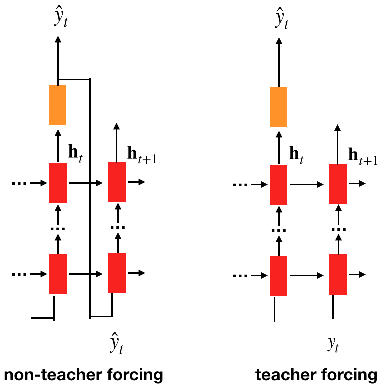
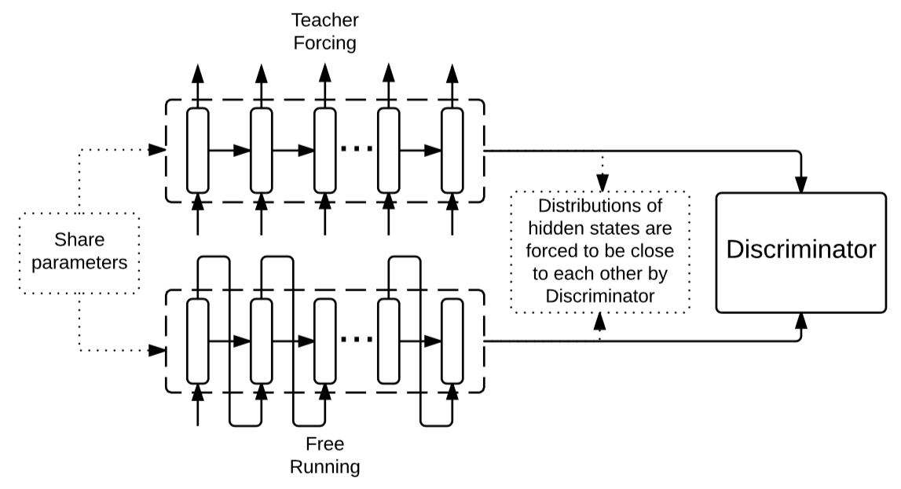
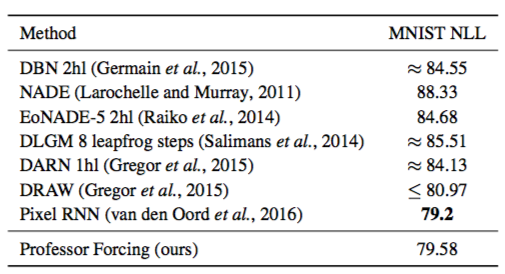
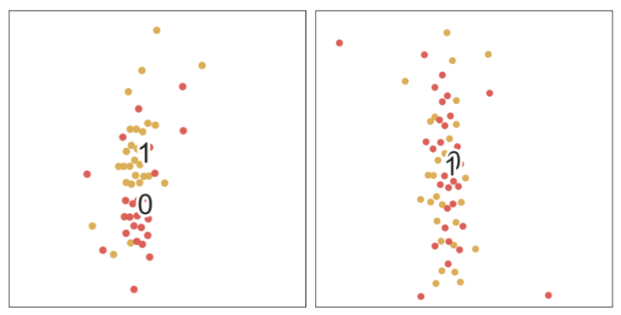
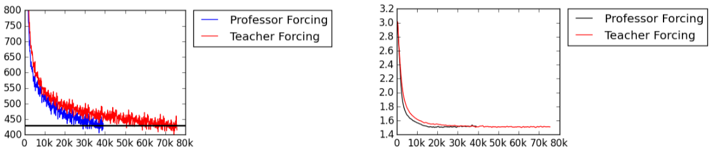

Teacher and Professor Forcing
Updated:
The inconsistency between training phrase and predicting phrase in RNN is a long recognized problem. During training the strategy is teacher forcing which means the true $y_{i-1}$ is fed at $i$ timestep. While at predicting phrase the true $y_{i-1}$ is not available, instead predicted value $\hat{y}_{i-1}$ is used. The difference is shown in Figure 1.

Figure 1
Professor Forcing
Alex Lamb et al. [1] came up with Professor Forcing to force similar behaviors in training and predicting phrases. In detail, the Professor Forcing uses adversarial domain adaptation to regulate hidden states to be same.
Architecture
There are a generator RNN model G which will run in teacher forcing mode as well as non-teacher forcing mode and a discriminator RNN model D which tries to discriminate dynamics of G is in teacher forcing or not. $x$ and $y$ are input and output respectively. Chosen hidden states and outputs in G are called behavior sequence $b$ output by $B(x,y,\theta_{g})$. $D(b)$ is the output of discriminator indicating the probability that $b$ is from teacher forcing G.
Objective
For discriminator parameters $\theta_{d}$, there is no doubt that it should maximize the likelihood of correctly classifying a behavior sequence
$$
C_{d}(\theta_{d}|\theta_{g}) = E_{(x,y) \sim data} [ -\log D(B(x,y,\theta_{g}),\theta_{d})] + E_{y \sim P_{\theta_{g}}(y|x)} [ -\log(1-D(B(x,y,\theta_{g}),\theta_{d}))]
$$
And for generator G in teacher forcing mode, it should maximize the likelihood of the data distribution
$$
NLL(\theta_{g}) = E_{(x,y) \sim data} [ -\log P_{\theta_{g}}(y|x)]
$$
and G in non-teacher forcing mode should fool the discriminator. That is G in non-teacher forcing mode should mock up the behavior sequence $b$ of G in teacher forcing mode.
$$
C_{f}(\theta_{g}|\theta_{d}) = E_{x \sim data, y \sim P_{\theta_{g}}(y|x) }[-\log D(B(x,y,\theta_{g}),\theta_{d})]
$$
Also optionally, we can ask the teacher-forced behavior to be indistinguishable from the nonteacher-forced behavior (not make munch sense to me)
$$
C_{t}(\theta_{g}|\theta_{d}) = E_{(x,) \sim data}[-\log (1 - D(B(x,y,\theta_{g}),\theta_{d}))]
$$

Figure 2: Professor Forcing Architecture
Experiments
The behavior sequence $b$ used in the experiments is the pre-tanh activation of the GRU hidden states for the whole sequence considered. The discriminator D processes the behavior sequence $b$ using a bidirectional recurrent neural network. Then fed them to a 3-layer MLP. Note that D’s parameters are updated only the accuracy is between 75% and 99%. The reason is that if the accuracy is too low wrong information is backpropagated to G and if the accuracy is too high they found it hurt to continue training it.
Sequential MNIST
On sequential MNIST dataset, the results are in Figure 3. More interestingly, if we t-sne the hidden states of teacher-forcing and professor-forcing (Figure 4), we can see that professor-forcing does regulate the behavior in predicting phase. The settings are
- Use a 3-layer GRU with 512 hidden states as the G.
- Use CNN as the D.
- Adam with a learning rate of 0.0001.

Figure 3: Test set negative log-likelihood evaluations

Figure 4: left: with teacher forcing, right: with professor forcing. Red dots correspond to teacher forcing hidden states, while the gold dots correspond to free running mode. With professor forcing, gold and red dot regions largely overlap.
Character-Level Language Modeling
On character level Penn-Treebank corpus, Professor Forcing works better (Figure 3). While on word level, there is no difference between Teacher Forcing and Professor Forcing. The same was observed on training on sequences of length less than 100 for speech synthesis. They attribute to the decreased importance of long-term dependencies on shorter sequences. The settings for language modeling are
- Divide the training set into non-overlapping sequences with each length of 500.
- G has 1 hidden layer GRU with 1024 hidden units.
- D consists of 2048 hidden units. Output activation of the last layer is clipped between -10 and 10.
- Adam with a learning rate of 0.0001.

Figure 5: Penn Treebank Likelihood Curves in terms of the number of iterations. Training Negative Log-Likelihood (left). Validation BPC (Right)
Comments
- After reading this paper, I doubt that Adversarial NMT exploits the intrinsic of GAN. The professor-forcing definitely is not a GAN. But the different I think only is that professor-forcing connects the gap between model at training phrase model and at predicting phrase. And the GAN connects the gap between ground true data distribution and model’s predicting distribution.
[1] Alex Lamb et al. Professor Forcing: A New Algorithm for Training Recurrent Networks. 2016